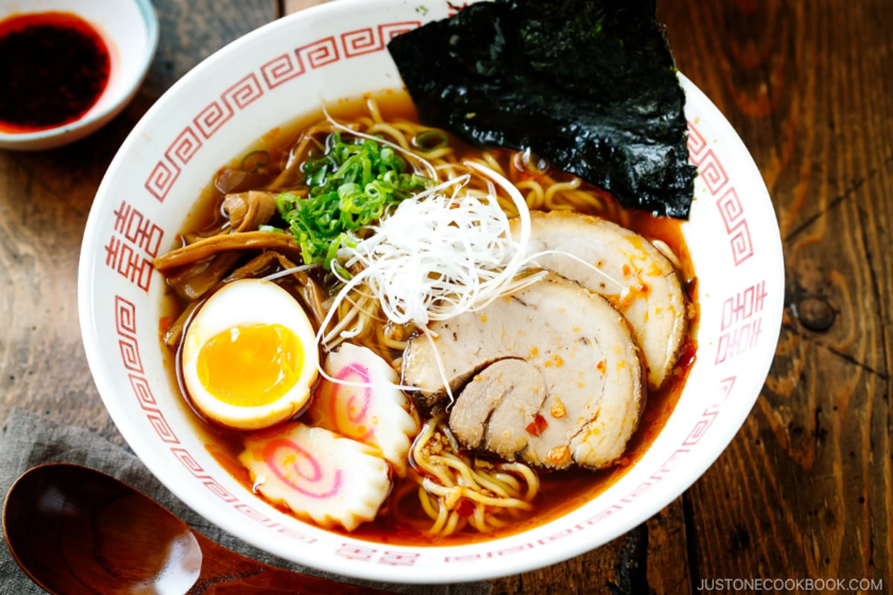

Japan Travel Guide
Japan is one of the most exciting places to visit because it has a mix of modern cities, traditional culture, amazing food, and beautiful scenery. This page gives a simple guide to places to visit, food to try, and travel tips for a better experience and a better trip.
Top Places to Visit in Japan
Japan has many great cities, and each one has something different to offer. Some places are better for shopping and nightlife, while others are known for temples, history, or food.
-
Tokyo
- Shibuya Crossing
- Akihabara
- Tokyo DisneySea
-
Kyoto
- Temples and shrines
- Traditional streets
- Cultural atmosphere
-
Osaka
- Dotonbori
- Street food
- Nightlife
Food to Try
One of the best parts of traveling to Japan is the food. Ramen shops are everywhere, sushi is fresh, and even convenience stores have surprisingly good meals. Trying different foods is a big part of the travel experience.

When in Japan, I would definitely recommend trying ramen, there's no better place to get it. I would also reccomend trying sushi, curry, onigiri, and konbini snacks. Japan is also a great place to try desserts and vending machine drinks that are hard to find in America.
Japan Travel Video
This video gives a good look at what traveling in Japan can feel like. It helps show the cities, food, transportation, and overall atmosphere.
Travel Tips
Traveling in Japan can be much easier if you prepare ahead of time. Learning a few basic Japanese phrases, carrying some cash, and understanding public manners can make a big difference.
- Learn simple phrases like arigatou and sumimasen.
- Carry cash because some places do not take cards.
- Be respectful and quiet on trains.
- Plan your train routes before leaving.
- Try local food instead of only familiar restaurants.
Japan Travel Map
Here are some places marked on this map which have events, sites, and things do to while you're in Japan.

Japan Slot Machine App
I added a fun slot game for generating travel ideas! Let's go gambling!